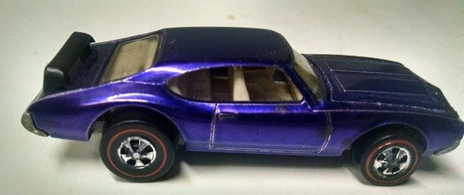
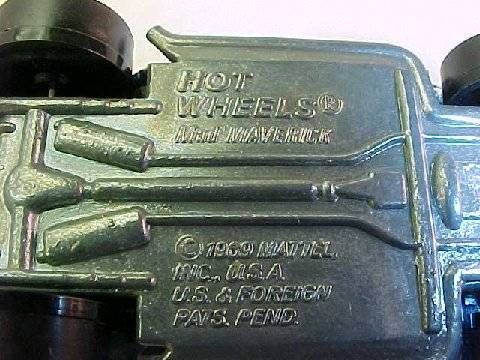

|
Hot Wheels top 3: Mad Maverick Base on Mighty Maverick (1969) |
|
|
TOP 3: Mad Maverick Base on Mighty Maverick (1969).
Todo el mundo sabe qué aspecto tiene un Mad Maverick, por lo que nos centramos en la parte importante aquí: la base. Si bien no hay escasez de estos «cochesitos», solo hay unos pocos con su nombre original, «Mad Maverick», fundidos en la placa base. Se modificó debido a un problema de derechos de autor con el fabricante de juguetes rival Johnny Lightning, que anteriormente había fabricado un Mad Maverick, por lo que los autos de cambio de nombre son muy buscados. Valor: $ 15,000 sueltos   |
||